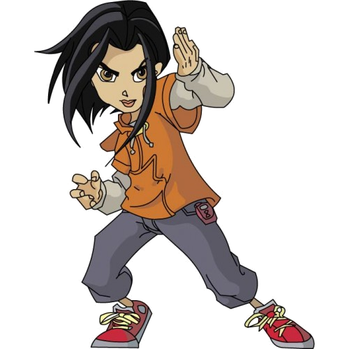

ADVENTURE OF Jackie_Chan
Jade is Jackie's Hong Kong-born, 12-year-old niece (technically his first-cousin-once-removed, since she is his "Cousin Shen's girl") who is already "Americanized". She is adventurous, and thus she frequently disobeys her uncle's advice to remain in safety. She tends to accompany Jackie as he goes out on adventures and gets herself into trouble. Though she will not admit it, she has to be rescued by Jackie almost every time. Just as often, however, her quick mind and flexible thinking help Jackie in situations where his moderate thinking and habitual caution are a definite hindrance. A frequent gag in the series is her inexplicable ability to appear in the middle of the action mere seconds after being left in a supposedly secure location/vehicle for her safety.she also wanted to be a hero/#1 fan like Jackie is and maybe have a fan club but Jackie forbids that because of her age.
In the second season, it turns out that Jade is possibly the Chosen One of the Ben-Shui order, although she seems largely unaware of this fact. This accounts for her considerable skill, energy, and enthusiasm, and for her immense (yet still mostly unrealized) potential in the martial arts, demonstrated when she easily beat up a skilled Section 13 worker called Mickey in the opening scene of the "Tchang Zu Portal" episode. Moreover, she is very good at using chi magic, as shown when she is able to annihilate Shadowkhan with Uncle's Puffer Fish. Jade once became the Queen of the Shadowkhan and her powers far exceeded Shendu's so much that he was forced to pay homage to her.
In the last episode, Jade is set to become an agent of Section 13 when she is older. In two episodes, Jade encounters a future version of herself: a very skilled young woman capable of engaging Jackie Chan in hand-to-hand combat and who is the head of Section 13 (Captain Black having left to set up "Section 14,") and came back in time once to stop Drago. Later on, Present Jade traveled to the future and found that Captain Black is back in charge of Section 13 and her future self has been reassigned to desk duty as punishment for Future Jade's previous unauthorized use of the Dragon Talisman, which resulted in the destruction of a donut shop, and its destruction by Drago. However, with the talismans returned to Shendu, and Shendu returned to the Netherworld, the existence of this timeline is in doubt.